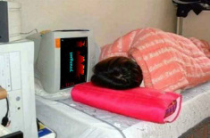

Nói về mình...
|
|
Nói về mình là điều không tốt. Nói tốt cho mình lại càng không hay. Tuy nhiên, những điều tôi tâm sự dưới đây để mong các bạn trẻ cùng nhau tiếp bước xây dựng những chương trình hữu ích và miễn phí cho cộng đồng.
Tôi được vinh dự nằm trong số người bần cùng nhất xã hội. Tôi là một anh chàng đạp xích lô, chạy xe ôm, bán thuốc lá dạo, bán trà đá ở bến xe, bán dầu hôi, một giáo viên, một sinh viên, một biên tập viên, một người lập trình, một dịch giả… Có lẽ số tôi không được học thật. Tôi chỉ có thể là học giả mà thôi. Tôi cũng may mắn được lọt vòng chung kết của cuộc thi lao phổi. Có lúc tôi tưởng mình không qua khỏi... rồi một phép mầu nào đó đã cứu sống tôi. |
Tôi cũng vẫn có một chút may mắn để vào học được 2 năm ở trường đại học khoa tin học. Cùng thời gian này tôi tự học Anh văn. Rất may là tôi thuộc loại người chậm lụt. Nghĩa là tôi chỉ hiểu những gì do chính tôi giải thích. Cha tôi là một quyển tự điển sống, cả về văn phạm lẫn từ vựng.
Mỗi ngày tôi học văn phạm với ông từ 7h sáng đến 10h tối. Cuối cùng tôi chẳng hiểu gì cả. Nói đúng hơn là ông dạy tôi một đống ve chai. Đụng đâu giảng đó, không theo trình tự hoặc cấu trúc nào cả.
Văn phạm Anh văn là tập hợp của nhiều điểm dễ. Hàng ngàn điểm dễ tập hợp lại sẽ thành 1 điểm khó. Nó làm cho chúng ta rối trí hoặc quên đi sau một thời gian ngắn không ôn luyện. Chính điều này tàn phá công sức học tiếng Anh của rất nhiều người.
Vì vậy, tôi quyết tâm thiết kế, xây dựng, phát triển một phần mềm góp phần giải quyết tận gốc vấn đề trên.
Đó cũng là một trong những lý do tôi muốn chương trình chạy được trên tất cả các máy vi tính. Đồng thời, tôi cũng muốn tạo điều kiện cho người nghèo, người bền chí có cơ hội học giỏi tiếng Anh mà không phải bỏ quyển sách vào thùng xe xích lô để học như tôi.
Tính đến thời điểm này thì các bạn nghèo vẫn có khả năng mua được 1 bộ máy vi tính có giá thành chỉ vài trăm ngàn đồng. Bởi lẽ Grammar luôn chú trọng thiết kế để chạy tốt với máy tính Pentium II, Ram 256M và với mọi phiên bản của windows (XP sp1, XP sp2, XP sp3, Vista, win 7_32bit, win 7_64 bit, Win 8, Win 10 (32,64)). Kể cả các máy dùng ghost đa cấu hình dởm.
Hiện nay, tôi vẫn tiếp tục kế hoạch, lắng nghe ý kiến, phát triển nội dung, tính sư phạm của chương trình này, mặc dù đã cố gắng hết sức nhưng vì chỉ có một mình nên tiến độ chưa được như mong muốn.
Grammar cung cấp cho các bạn bộ từ điển tra nhanh hơn 500.000 mục từ, và còn tiếp tục bổ sung thêm. Các bạn có thể gõ từ cần tra bất cứ lúc nào mà không phải mở từ điển, có phát âm bằng âm thanh thực với công nghệ của Microsoft, có phiên âm quốc tế và phiên âm Việt Nam. Tất cả các bài khóa đều được thiết kế để nghe được. Đặc biệt, có nhóm bài khóa dùng cho luyện nghe với âm thanh chất lượng cao và hỗ trợ luyện nghe bằng video đủ mọi cấp độ.
Tiếp theo là phần LUYỆN NÓI. Đây là phần độc đáo với phương pháp luyện tập mới nhất nhằm tạo PHẢN XẠ ĐÀM THOẠI. Phần này giúp học viên nói cấp tốc và cả học nói nghiêm túc theo bài bản. Nó tạo ra một giáo viên thật, Đối thoại và nhắc nhở từng câu từng từ theo từng tốc độ. Ngoài ra bạn có thể tự chọn những câu cần học theo ý muốn. Từ Grammar 3.1 trở đi, người VN không còn phải lệ thuộc vào gia sư Mỹ để học đàm thoại.
Mỗi ngày tôi học văn phạm với ông từ 7h sáng đến 10h tối. Cuối cùng tôi chẳng hiểu gì cả. Nói đúng hơn là ông dạy tôi một đống ve chai. Đụng đâu giảng đó, không theo trình tự hoặc cấu trúc nào cả.
Văn phạm Anh văn là tập hợp của nhiều điểm dễ. Hàng ngàn điểm dễ tập hợp lại sẽ thành 1 điểm khó. Nó làm cho chúng ta rối trí hoặc quên đi sau một thời gian ngắn không ôn luyện. Chính điều này tàn phá công sức học tiếng Anh của rất nhiều người.
Vì vậy, tôi quyết tâm thiết kế, xây dựng, phát triển một phần mềm góp phần giải quyết tận gốc vấn đề trên.
Đó cũng là một trong những lý do tôi muốn chương trình chạy được trên tất cả các máy vi tính. Đồng thời, tôi cũng muốn tạo điều kiện cho người nghèo, người bền chí có cơ hội học giỏi tiếng Anh mà không phải bỏ quyển sách vào thùng xe xích lô để học như tôi.
Tính đến thời điểm này thì các bạn nghèo vẫn có khả năng mua được 1 bộ máy vi tính có giá thành chỉ vài trăm ngàn đồng. Bởi lẽ Grammar luôn chú trọng thiết kế để chạy tốt với máy tính Pentium II, Ram 256M và với mọi phiên bản của windows (XP sp1, XP sp2, XP sp3, Vista, win 7_32bit, win 7_64 bit, Win 8, Win 10 (32,64)). Kể cả các máy dùng ghost đa cấu hình dởm.
Hiện nay, tôi vẫn tiếp tục kế hoạch, lắng nghe ý kiến, phát triển nội dung, tính sư phạm của chương trình này, mặc dù đã cố gắng hết sức nhưng vì chỉ có một mình nên tiến độ chưa được như mong muốn.
Grammar cung cấp cho các bạn bộ từ điển tra nhanh hơn 500.000 mục từ, và còn tiếp tục bổ sung thêm. Các bạn có thể gõ từ cần tra bất cứ lúc nào mà không phải mở từ điển, có phát âm bằng âm thanh thực với công nghệ của Microsoft, có phiên âm quốc tế và phiên âm Việt Nam. Tất cả các bài khóa đều được thiết kế để nghe được. Đặc biệt, có nhóm bài khóa dùng cho luyện nghe với âm thanh chất lượng cao và hỗ trợ luyện nghe bằng video đủ mọi cấp độ.
Tiếp theo là phần LUYỆN NÓI. Đây là phần độc đáo với phương pháp luyện tập mới nhất nhằm tạo PHẢN XẠ ĐÀM THOẠI. Phần này giúp học viên nói cấp tốc và cả học nói nghiêm túc theo bài bản. Nó tạo ra một giáo viên thật, Đối thoại và nhắc nhở từng câu từng từ theo từng tốc độ. Ngoài ra bạn có thể tự chọn những câu cần học theo ý muốn. Từ Grammar 3.1 trở đi, người VN không còn phải lệ thuộc vào gia sư Mỹ để học đàm thoại.

Đó là một vài nét chính của Grammar. Ngoại trừ việc chửi tôi ngu, bạn cứ góp ý thoải mái. Những ý kiến của bạn sẽ đóng góp rất lớn cho GRAMMAR.
Hỡi các bạn trẻ! Hãy làm một việc gì đó cho cuộc sống của mình có ý nghĩa trước khi qua đời. Giá trị của một con người là những việc tốt họ làm được khi còn sống chứ không phải là số tài sản tích lũy được hoặc danh tánh được tôn vinh. Thà sống có ích cho cộng đồng, cho mọi người, còn hơn tích lũy của cải thật nhiều để rồi khi nhắm mắt xuôi tay lại đem đi hối lộ cho Diêm vương!
Nếu bạn muốn bắt tay vào việc này, hãy gạt bỏ tất cả những toan tính tầm thường, từ danh vọng, tiền bạc, lợi ích và thậm chí cả tương lai. Tất nhiên, bạn sẽ không còn phải làm việc đơn độc như tôi. Nếu chỉ nghĩ đến một trong các quyền lợi nào đó, những suy nghĩ cá nhân ích kỷ thì bạn sẽ là người bỏ cuộc đầu tiên.
Nếu bạn đang thắc mắc SỐNG ĐỂ LÀM GÌ? thì lợi ích của GRAMMAR là câu trả lời cho bạn đó!
In God we trust.
Hỡi các bạn trẻ! Hãy làm một việc gì đó cho cuộc sống của mình có ý nghĩa trước khi qua đời. Giá trị của một con người là những việc tốt họ làm được khi còn sống chứ không phải là số tài sản tích lũy được hoặc danh tánh được tôn vinh. Thà sống có ích cho cộng đồng, cho mọi người, còn hơn tích lũy của cải thật nhiều để rồi khi nhắm mắt xuôi tay lại đem đi hối lộ cho Diêm vương!
Nếu bạn muốn bắt tay vào việc này, hãy gạt bỏ tất cả những toan tính tầm thường, từ danh vọng, tiền bạc, lợi ích và thậm chí cả tương lai. Tất nhiên, bạn sẽ không còn phải làm việc đơn độc như tôi. Nếu chỉ nghĩ đến một trong các quyền lợi nào đó, những suy nghĩ cá nhân ích kỷ thì bạn sẽ là người bỏ cuộc đầu tiên.
Nếu bạn đang thắc mắc SỐNG ĐỂ LÀM GÌ? thì lợi ích của GRAMMAR là câu trả lời cho bạn đó!
In God we trust.
Sống không đáng sống là bán rẻ cuộc sống.
Chết không đáng chết là bán rẻ con tim.
Chết không đáng chết là bán rẻ con tim.
Một vài người lo ngại rằng Grammar bẫy người tiêu dùng bằng cách giả bộ đưa ra các phiên bản miễn phí ban đầu. Nhưng Grammar luôn miễn phí và tung ra tất cả nguồn dữ liệu vào các phiên bản của nó. Tác giả đã phải trả giá rất thích đáng bằng cả cuộc đời mình để tạo nên Grammar. Vì vậy người tiêu dùng không phải trả một giá nào nữa. Tuy nhiên tác giả nghiêm cấm bất cứ hình thức kinh doanh nguồn dữ liệu của Grammar hoặc dùng Grammar để trục lợi gián tiếp. Ngoại trừ việc bán đĩa CD, mọi hình thức khác đều phải có tác quyền.
Mọi ý kiến xin chuyển đến trang góp ý.
Xin ghi lại số câu nếu nghi ngờ câu có lỗi. Mọi góp ý xin mô tả thật rõ ràng.
Thân chào.
Copyright © 1997 GRAMMAR All Rights Reserved
Mọi ý kiến xin chuyển đến trang góp ý.
Xin ghi lại số câu nếu nghi ngờ câu có lỗi. Mọi góp ý xin mô tả thật rõ ràng.
Thân chào.
Copyright © 1997 GRAMMAR All Rights Reserved